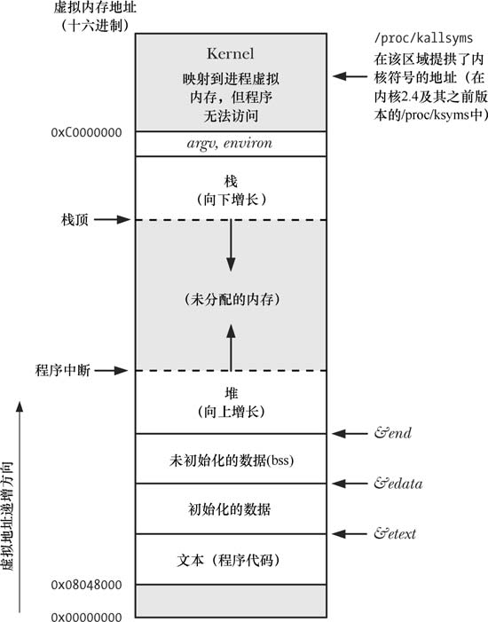
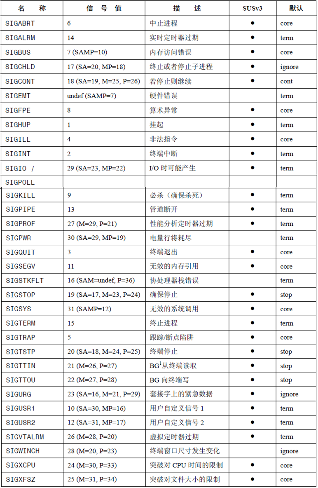
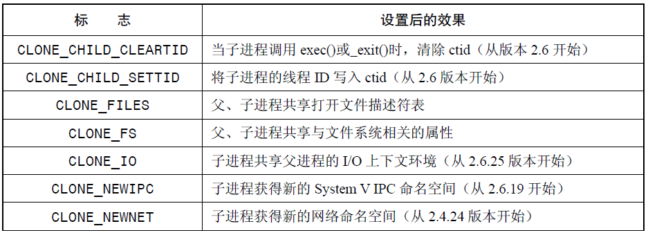
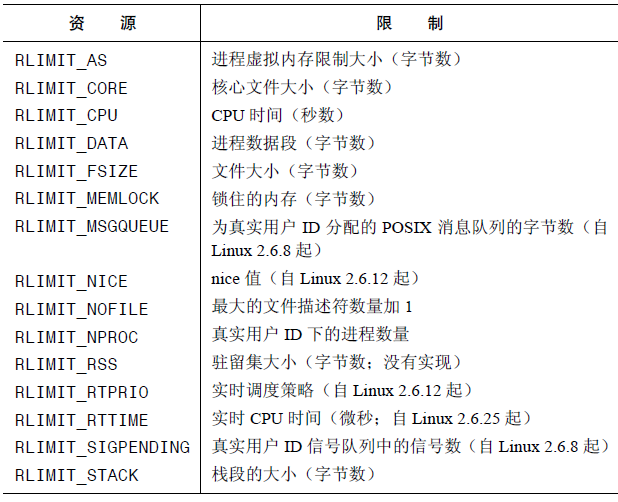

进程
基础内容
进程号
每个进程都有一个进程号（PID），它是一个正数，用来唯一标识系统中的某个进程。对于各种系统调用而言，进程号有时候可以作为传入参数，有时候可以作为返回值。
系统调用getpid返回调用进程的进程号：
1 |
|
getpid()返回值的数据类型是pid_t，这一数据类型被专门用来存储进程号。创建一个新的进程时，内核会按顺序将下一个可用的进程号分配给新进程使用；而当进程号达到最大值的限制时，内核将重置进程号计数器至300（因为低数值的进程号通常被系统进程和守护进程长期占用，故之间跳过这一区域）。Linux的最大进程号由内核常量PID_MAX所定义。
每个进程都有一个创建自己的父进程，系统调用getppid可以检索父进程的进程号：
1 |
|
所有进程的始祖是1号进程init，在Linux的命令行输入pstree 1即可看到系统中进程的家族树结构。
进程的内存布局
在Linux系统中，进程的内存被布局到虚拟内存中。每个进程所分配的虚拟内存由很多部分组成，每个部分称为“段”，如下图所示：
每个部分的含义如下：
- 文本段：包含进程运行的程序机器语言指令。为了防止进程通过错误指针修改指令，这段内存被设置为只读；同时因为多个进程可以运行同一程序，故这一段内存可共享，这样便可将程序代码映射到多个进程的虚拟地址空间中。
- 初始化数据段：包含显式初始化的全局变量和静态变量。当程序加载到内存时，从可执行文件中读取这些变量的值。
- 未初始化数据段：包含未进行显式初始化的全局变量和静态变量，程序启动之前，这段内存的所有值被初始化为0。
- 栈：动态增长和收缩的段，由栈帧组成，系统会为每一个当前调用的函数分配一个栈帧。栈帧中存储了函数的局部变量、实参和返回值。
- 堆：可以在运行时为变量动态分配内存的一块区域。
虚拟内存的规划之一是将每个程序使用的内存切割成小型的、固定大小的“页”（page）单元。相应地，将RAM 划分成一系列与虚拟内存页尺寸相同的页帧。任一时刻，每个程序仅有部分页需要驻留在物理内存页帧中。这些页构成了所谓驻留集（resident set）。程序未使用的页拷贝保存在交换区（swap area）内（磁盘空间中的保留区域，作为计算机RAM 的补充），仅在需要时才会载入物理内存。若进程欲访问的页面目前并未驻留在物理内存中，将会发生页面错误（page fault），内核即刻挂起进程的执行，同时从磁盘中将该页面载入内存。由于程序访问的空间和时间局部性特征，程序即便仅有部分地址空间存在于RAM 中，依然可能得以执行。
为支持这一组织方式，内核需要为每个进程维护一张页表（page table）。该页表描述了每页在进程虚拟地址空间（virtual address space）中的位置（可为进程所用的所有虚拟内存页面的集合）。页表中的每个条目要么指出一个虚拟页面在RAM中的所在位置，要么
表明其当前驻留在磁盘上。
在进程虚拟地址空间中，并非所有的地址范围都需要页表条目。通常情况下，由于可能存在大段的虚拟地址空间并未投入使用，故而也无必要为其维护相应的页表条目。若进程试图访问的地址并无页表条目与之对应，那么进程将收到一个SIGSEGV信号。
使用虚拟内存的优点包括：
- 进程与进程，进程和内核互相隔离
- 适当情况下，两个或者多个进程可以共享内存
- 通过对页表条目的标记，方便实现内存保护机制
- 无需关注程序在RAM的物理布局
- 一个进程所使用的虚拟内存大小可以超过RAM的容量
- RAM中可以容纳多个进程所使用的内存，从而提高CPU的利用率
栈和栈帧
函数的调用和返回使得栈的增长和收缩呈线性。栈驻留在内存地址的高端并向下增长，栈指针寄存器用于跟踪当前的栈顶。每次调用函数时，会在栈上新分配一帧，而当函数返回时再从栈上将此帧移除。由于函数能够嵌套调用，故栈中可能有多个栈帧。
每个用户栈的栈帧包括如下信息：
- 函数实参和局部变量，函数返回时这些变量会自动被销毁
- 函数调用的信息，每当一个函数调用另一个函数时，会在被调用函数的栈帧中保存当前寄存器的副本，以便函数返回时能为函数调用者将寄存器恢复原状
命令行参数
每个C语言程序都必须有一个main()的主函数，作为程序启动的起点。当执行程序时，命令行参数通过两个入参提供给main函数，第一个为int argc，表示命令行参数的个数；第二个参数char *argv[]，是一个指向命令行参数的指针数组，第一个字符串argv[0]指向该程序的名称，最后一个元素argv[argc]为NULL指针，其余参数指向其它的命令行参数。除了最后一个元素之外，其余指针指向的参数都以空字符结尾。
环境列表
每一个进程都有与之相关的环境列表，它是一个字符串数组，其中每个字符串都以名称=值（name=value）的格式定义。而列表中的名称也被称为环境变量。
新进程在创建时，会继承其父进程的环境副本。子进程只有在创建时才能获得其父进程的环境副本，故这一信息传递是单向、一次性的。子进程创建之后，父进程和子进程都可以修改各自的环境变量，而且这些变更对于对方而言都不再可见。
环境变量常见的用途之一是在shell中，通过在自身环境中放置变量值，shell便可以确保将这些值传递给所创建的进程。大多数shell使用export命令向环境中添加变量值。
备注：shell和bash
Shell是系统的用户界面，相当于操作系统的“外壳”，提供了用户与内核进行交互操作的一种接口。它接收用户输入的命令并把它送入内核去执行，是在Linux内核与用户之间的解释器程序。
而bash指的是Linux系统中的/bin/bash解释器，它负责向内核翻译以及传达用户/程序指令。而如果在shell脚本的第一行写 #!/bin/bash ，意思就是用 /bin/bash解释器去执行这个脚本。
通过Linux专有的/proc/PID/environ文件，可以检查任一进程的环境列表。而在C语言程序中，也可以使用全局变量char** environ来访问环境列表。environ和argv参数类似，指向一个以NULL结尾的指针数组，而其它每个指针又指向一个以空字节终止的字符串。
如果要在环境列表里面检索单个值，可以用下面的函数：
1 |
|
这一函数接收一个环境变量名称name作为参数，返回相应的value，并以字符串指针的形式传值；如果不存在指定名称的环境变量则返回NULL。
如果要修改环境，可以使用的函数包括：
1 |
|
非局部跳转
库函数setjmp()和longjmp()可以执行非局部跳转，此处的非局部指的是跳转的目标位于当前执行函数之外的某个位置。这两个函数可以被用于下面的场景：在一个深层嵌套的函数调用中发生了错误，需要放弃当前任务，从多层函数调用中返回主函数。二者的用法如下：
1 |
|
setjmp函数用于设置跳转点，在后面调用longjmp时就会跳转到setjmp的位置。从编程的角度来看，调用longjmp之后，看起来和第二次调用setjmp返回时完全一样。。通过查看setjmp()返回的整数值，可以区分setjmp调用是初始返回还是第二次“返回”。初始调用返回值为0，后续“伪”返回的返回值为longjmp()调用中val参数所指定的任意值。通过对val参数使用不同值，能够区分出程序中跳转至同一目标的不同起跳位置。
env参数用于存储当前进程的信息，以及程序计数寄存器和栈指针寄存器的副本等信息，这些信息被用于恢复setjmp处的程序执行状态，从而使得后续的程序可以被接着执行。在调用longjmp时，需要传入与setjmp相同的env变量。由于两个函数的调用通常位于不同的函数，因此env参数常常被设置为全局变量。
在实际工程中，应该尽可能地避免使用setjmp和longjmp这两个函数，因为它们会使得程序地复杂程度变高，使程序难以阅读和维护。
内存分配
在堆上分配内存
进程可以通过增加堆的大小来分配内存，通常将堆的当前内存边界称为“Program Break”。在程序开始运行的时候，Program Break位于未初始化数据段的末尾之后。而在Program Break的位置抬升之后，程序可以访问新分配区域内的任何内存地址，而此时物理内存页尚未分配。内核会在进程首次试图访问这些虚拟内存地址时自动分配新的物理内存页。
下面两个系统调用可以操纵Program Break：
1 |
|
brk会将Program Break设置为参数end_data_segment所指向的位置。由于虚拟内存以页为单位进行分配，因此end_data_segment实际会四舍五入到下一个内存页的边界处。而sbrk将Program Break在原有的位置上增加参数increment表示的大小，intptr_t属于整数数据类型，如果传入0则会返回当前Program Break的位置。
需要注意的是，如果试图将Program Break设置为一个低于其初始值的位置，则有可能会导致无法预知的行为。
C语言程序的malloc函数被用于在堆上分配size大小的内存，并返回指向新分配内存起始位置处的指针，其所分配的内存未初始化。这一函数的接口简单，更加方便在多线程程序中使用，且允许随意释放内存块。它的用法如下：
1 |
|
如果函数执行成功，则返回分配内存起始位置的指针，失败则返回NULL。由于函数的返回类型为void*，因此可以将其赋值给任意类型的指针。同时malloc返回的内存块已经基于8或者16字节进行内存对齐，从而适宜于高效访问不同类型的数据结构。
malloc()的实现很简单。它首先会扫描之前由free()所释放的空闲内存块列表，以求找到尺寸大于或等于要求的一块空闲内存。（取决于具体实现，采用的扫描策略会有所不同）如果这一内存块的尺寸正好与要求相当，就把它直接返回给调用者。如果是一块较大的内存，那么将对其进行分割，在将一块大小相当的内存返回给调用者的同时，把较小的那块空闲内存块保留在空闲列表中。
如果在空闲内存列表中根本找不到足够大的空闲内存块，那么malloc()会调用sbrk()以分配更多的内存。为减少对sbrk()的调用次数，malloc()并未只是严格按所需字节数来分配内存，而是以更大幅度（以虚拟内存页大小的数倍）来增加Program Break，并将超出部分置于空闲内存列表。
堆内存的释放可以使用free函数：
1 |
|
free函数将会释放ptr参数所指向的内存块，它应当是之前由malloc或者其它堆内存分配函数之一所返回的地址。
一般情况下，free函数并不降低Program Break的位置，而是将这块内存添加到空闲内存列表中，供后续的malloc函数循环使用。当malloc()分配内存块时，会额外分配几个字节来存放记录这块内存大小的整数值。该整数位于内存块的起始处，而实际返回给调用者的内存地址恰好位于这一长度记录字节之后。当将内存块置于空闲内存列表（双向链表）时，free()会使用内存块本身的空间来存放链表指针，将自身添加到列表中。
此外，还有一些在堆上分配内存的其他函数：
1 | void* calloc(size_t numitems, size_t size) |
这一函数用于给一组相同对象分配内存，其中numitems指的是对象的个数，size指的是每个对象的大小，已经分配的内存会被初始化为0。而函数的返回值则是一个指向这块内存起始处的指针。
1 | void* realloc(void* ptr, size_t size) |
这一函数用来调整一块内存的大小为size，而ptr为需要调整大小的内存块的指针，这块内存应该是之前malloc函数分配的。而realloc函数可能会重新分配一块内存，并将原来的数据复制到新的内存块，这将会占用大量的CPU资源。因此，应该尽量避免调用realloc。
在栈上分配内存
由于栈帧也存在扩展空间，因此也可以通过增加栈帧的大小从栈上动态分配内存。alloca函数可以实现这一功能，它的用法如下：
1 |
|
size参数指定在堆栈上分配的字节数，函数的返回值为指向已分配内存块的指针。
由于编译器将alloca作为内联代码处理，且直接通过调整堆栈指针来实现，加上无需维护空闲内存块列表，因此使用alloca分配内存的速度快于malloc。在使用时需要注意的是，alloca函数分配的内存不需要也绝不能使用free函数释放，当栈帧移除之后（即函数返回）这块内存空间将会被自动释放掉。
系统和进程信息
/proc文件系统
概述
为了提供更加简便的方法来访问内核信息，许多现代的UNIX实现提供了一个/proc虚拟文件系统。该文件系统驻留于/proc目录中，包含了各种用于展示内核信息的文件，并且允许进程通过常规文件I/O系统调用来方便地读取，有时还可以修改这些信息。这一文件系统称为虚拟，是因为其包含的文件和子目录并未存储于磁盘上，而是由内核在进程访问此类信息时动态创建而成。
获取进程有关的信息
对于系统中的每个进程，内核都提供了相应的目录，命名为/proc/PID，其中PID是进程的ID。在此目录中的各种文件和子目录包含了进程的相关信息，包括：
status：包含了关于进程的一系列信息，如进程ID、凭证、内存使用量、信号等cmdline：以\0分割的命令行参数cwd：指向当前工作目录的符号连接environ：NAME=value键值对环境列表，用\0分割exe：指向正在执行文件的符号连接fd：文件目录，包含了指向由进程打开文件的符号连接，例如/proc/1968/1是ID为1968的进程中指向标准输出的符号连接maps：内存映射mem：进程的虚拟内存mounts：进程的安装点root：指向根目录的符号连接task：包含了进程中的每个线程，每个线程都对应于一个子目录
系统信息
在/proc目录下还包含了一些系统信息，例如：
/proc/net：有关网络和套接字的状态信息/proc/sys/fs：文件系统的相关设置/proc/sys/kernel：各种常规的内核设置/proc/sys/net：网络和套接字的设置/proc/sys/vm：内存管理设置/proc/sysvipc：有关System V IPC对象的信息
系统标识
系统调用uname()返回了一系列关于主机系统的标识信息，用法如下：
1 |
|
其中，utsbuf参数是一个指向utsname的指针，它的定义如下：
1 | struct utsname{ |
进程的创建
系统调用fork()可以创建一个新的进程，它的用法为：
1 |
|
这一系统调用执行完成之后，将会存在两个进程，这两个进程都会从fork()的返回处继续往下执行。这两个进程执行相同的程序代码段，但是各自拥有不同的栈段、数据段和堆段拷贝。子进程的栈、数据和堆段开始时完全复制于父进程。而在此之后，每个进程可以修改各自的栈数据和堆段的变量，对另一进程完全没有影响。
程序代码可以通过fork()的返回值来区分父进程和子进程。在父进程中，这一系统调用返回的时子进程的进程ID，而在子进程中则返回0。如果无法创建子进程，则父进程返回-1。
执行fork()之后，子进程会获得父进程所有文件描述符的副本。因此这意味着父、子进程中对应的文件描述符会指向相同的打开文件句柄（其中含有当前文件偏移量、文件状态标志，这些属性在父子进程中共享）。因此如果子进程更新了文件偏移量，那么这也会影响到父进程中相应的描述符。
在执行fork()之后，父进程和子进程执行的特定顺序是不确定的，如果要保证某一特定执行顺序，则需要使用一些同步技术如信号等。
进程的终止
API
进程的终止有两种方式，一种为异常终止，通过接收一个信号而引发；而另一个方式是使用_exit()系统调用正常终止：
1 |
|
其中，status参数定义了进程的终止状态，父进程可以调用wait()来获取该状态。虽然它为int数据类型，但是只有低8位可以被父进程使用。调用_exit()的程序总是会成功终止。
但是程序一般不会直接调用_exit()，而是调用库函数exit()，它会在调用_exit()之前执行各种动作：
1 |
|
exit()系统调用执行的动作包括：
- 调用退出处理程序，即通过
atexit()和on_exit()注册的函数，其执行顺序和注册顺序相反。 - 刷新
stdio流缓冲区 - 使用由
status提供的值，执行_exit()系统调用。
程序的另一种终止方法是从main()函数中返回，或者一直执行到函数的结尾处。执行return n其实等同于执行exit(n)。如果main()函数无返回值，则同样会执行exit()函数，但是返回值与C语言的标准以及编译器选项有关。
进程终止的细节
在进程终止时，无论是正常还是异常终止，都会发生如下动作：
- 关闭所有打开的文件描述符、目录流、信息目录描述符和字符集转换描述符
- 释放进程持有的任何文件锁
- 分离任何已经连接的System V共享内存段，且对应于各段的
shm_nattch计数器值将会减一 - 进程为每个System V信号量设置的
semadj值将会被加到信号量值中 - 如果该进程是一个管理终端的管理进程，那么系统会向终端前台进程组中的每个进程发送SIGHUP信号，接着终端与会话脱离
- 关闭该进程打开的任何POSIX有名信号量
- 关闭该进程打开的任何POSIX消息队列
- 如果某进程组称为孤儿，且该组中存在任何已停止进程，则组中所有进程都会收到SIGHUP信号，随后收到SIGCONT信号
- 移除该进程通过
mlock()或者mlockall()建立的任何内存锁 - 取消该进程调用
mmap()所创建的任何内存映射
退出处理程序
退出处理程序指的是由程序设计者提供的函数，在调用exit()使得程序正常终止时会自动执行（异常终止或者调用_exit()则不会调用）。注册退出处理程序的函数有两个：
1 |
|
可以注册多个退出处理程序，甚至将同一个函数注册多次。当应用程序调用exit()时，这些函数的执行顺序与注册顺序相反。但是如果其中任意一个退出处理程序无法返回，那么就不再调用剩余的处理程序。
通过fork()创建的子进程会继承父进程注册的退出处理函数。而进程调用exec()时，会移除所有已注册的退出处理程序。
进程监控
等待子进程
对于需要创建子进程的程序来说，父进程可以监测子进程的终止时间和过程是很有必要的。系统调用wait()等待调用进程的任意一个子进程终止，同时在参数status所指向的缓冲区中返回该子进程的终止状态：
1 |
|
这一系统调用会执行如下的动作：
- 如果调用这一函数时没有任何子进程终止，则这一调用将一直阻塞，直到某个子进程终止；如果调用时已有子进程终止，则立即返回。需要注意的是，如果在同一时刻有多个子进程同时退出，
wait处理它们的顺序没有任何的规定。 - 如果
status非空，则关于子进程如何终止的信息会通过它指向的整型变量返回 - 内核将为父进程下所有子进程的运行总量追加进程CPU时间以及资源使用数据
- 将终止子进程的ID作为
wait()的结果返回
出错时返回-1，可能的错误原因之一是调用进程并无已经终止的子进程，此时会将errno设置为ECHILD。
系统调用wait()存在很多限制，包括：
- 如果父进程已经创建了多个子进程，无法等待某个特定子进程的完成，只能按顺序等待下一个子进程的终止
- 如果没有子进程退出，则一直保持阻塞状态。有时会希望执行非阻塞的等待
- 只能发现那些已经终止的子进程，无法处理子进程因为某个信号而停止或者已停止子进程收到信号恢复执行的情况
为了解决这些限制，可以使用waitpid()系统调用：
1 |
|
waitpid与wait的返回值和status参数的含义相同。参数pid表示需要等待的具体子进程，如果大于0则表示等待进程ID为pid的子进程，如果等于0则等待与父进程同一个进程组的所有子进程，如果小于-1则等待进程标识符等于pid绝对值的所有子进程，如果等于-1则等待任意子进程。参数options是一个位掩码，可以按位或操作包含这些标志：WUNTRACED（除返回终止子进程的信息外，还返回因信号而停止的子进程信息）、WCONTINUED（返回那些收到SIGCONT信号而恢复执行的已停止子进程的状态信息）、WNOHANG（如果参数pid指定的子进程并未发生状态改变，则立即返回而不会阻塞，此时返回0。
由wait或者waitpid返回的status值可以用来区分不同的子进程事件。有一组标准宏可以用来解析等待状态值：
1 |
|
在Linux系统中，也可以使用waitid系统调用来等待子进程：
1 |
|
其中，idtype和id指定了需要等待的子进程，idtype可以为下面三个参数中的其中一个：
P_ALL：等待任何子进程，同时忽略id值P_PID：等待进程ID为id进程的子进程P_PGID：等待进程组ID为id各进程的所有子进程
waitid可以更加精确地控制子进程，可以通过位运算指定如下的标识：
WEXITED：等待已终止的子进程，无论其是否正常返回WSTOPPED：等待已通过信号而停止的子进程WCONTINUED：等待经信号SIGCONT恢复的子进程WNOHANG：非阻塞调用WNOWAIT：返回子进程状态，但子进程依然处于可等待状态，稍后可再次等待并获取相同信息
孤儿进程与僵尸进程
孤儿进程指的是父进程先于子进程结束的情况，此时孤儿进程将会由init进程（进程ID为1，即所有进程始祖）来接管。
僵尸进程指的是在父进程执行wait之前就已经终止的子进程。此时，内核会将子进程转为僵尸进程，这将会释放掉子进程使用的大部分资源供其它进程使用。子进程会在内核进程表中保留一条记录，其中包含子进程ID、终止状态、资源使用数据等信息。这确保了父进程总是可以执行wait方法。当父进程执行完wait之后，内核会自动删除僵尸进程；如果父进程结束之前没有调用wait，那么init进程将会接管这些僵尸进程并删除。
因此，如果父进程创建了某一子进程且一直未退出，但是未执行wait，在内核的进程表中将为这一子进程永久保留一条记录，如果存在大量的僵尸进程，它们将会填满内核进程表，从而阻碍新进程的创建。在设计长生命周期的父进程（如网络服务器和shell）时要特别注意这一点。
SIGCHLD信号
前面介绍的系统调用将会导致阻塞或者轮询，从而造成了CPU资源浪费，并增加了应用程序复杂度。为了规避这些问题，可以采样针对SIGCHLD信号的处理程序。
无论一个子进程于何时终止，系统都会向其父进程发送SIGCHLD 信号。对该信号的默认处理是将其忽略，不过也可以使用信号处理程序来捕获它。还有另一种移植性稍差的处理方法，进程可选择将对SIGCHLD 信号的处置置为忽略（SIG_IGN），这时将立即丢弃终止子进程的状态（因此其父进程从此也无法获取到这些信息），子进程也不会成为僵尸进程。
程序执行
执行新程序
系统调用execve()可以将新程序加载到某一进程的内存空间。在这一操作过程中，将会丢弃掉旧的程序，而进程的栈、数据和堆段也将会被新程序的对应部分替换。在执行了各种C语言函数库的运行时启动代码和程序的初始化代码之后，将会从新程序的main()函数处开始执行。这一系统调用的使用方法如下：
1 |
|
其中，参数pathname包含了准备载入当前进程空间新程序的路径名，可以为绝对或者相对路径；参数argv用来给程序传递命令行参数；最后一个参数envp指定了新程序的的环境列表。在调用execve之后，因为同一进程依然存在，所以进程ID保持不变。
如果函数返回则表明发生错误，可以从errno来判断原因。可能返回的错误有：EACCES，代表pathname指向的不是常规文件、文件不可执行或者其中某一级目录不可搜索；ENOENT，代表pathname指向的文件不存在；ENOEXEC，代表系统无法识别文件格式；ETXTBSY，代表存在进程以写入方式打开pathname指代的文件；E2BIG，代表参数列表和环境列表所需空间总和超出了允许的最大值。
基于execve系统调用，还有下面的多种库函数可以选择，它们在为新程序指定程序名、参数列表以及环境变量的方式上有所不同：
1 |
|
这些函数的差异体现在函数名称在exec之后的不同后缀：
- 后缀p代表系统会在由环境变量PATH所指定的目录列表中寻找相应的执行文件，允许只提供程序的文件名而不提供完整路径。如果文件名称中包含"/"则将其视为相对或者绝对路径名，不再使用变量PATH来搜索文件。
- 后缀l代表以字符串列表的形式来指定参数，而不使用数组来描述
argv列表。字符串列表需要以NULL指针来终止。 - 后缀e代表允许手动为新程序指定环境变量，而其余函数则使用调用者当前环境作为新程序的环境
文件描述符与信号
默认情况下，由exec()的调用程序所打开的所有文件描述符在exec()的执行过程中会保持打开状态，且在新程序中依然有效。如果要改变这一设定，可以在打开文件描述符时设置FD_CLOEXEC标志。
exec()在执行时会将现有进程的文本段丢弃。该文本段可能包含了由调用进程创建的信号处理器程序。既然处理器已经不知所踪，内核就会将对所有已设信号的处置重置为SIG_DFL，而对所有其他信号（即将处置置为SIG_IGN或SIG_DFL的信号）的处置则保持不变。
执行shell命令
程序可以通过调用system()函数来执行任意的shell命令，用法如下：
1 |
|
函数会创建一个子进程来运行shell，并执行命令command。它的使用十分简便，但是效率很低，因为在调用过程中需要创建至少两个进程，一个用于运行shell，另一个或者多个用于shell所执行的命令。
信号
概述
信号产生
信号是事件发生时对进程的通知机制，有时也被称为软件中断。一个具有合适权限的进程可以向另一个进程发送信号，这一用法可以作为一种同步技术，或是进程间通信的方式。但是将信号利用于通信的场景很少，因为标准信号不能排队处理，实时信号也存在对信号排队数量的限制，而且信号可携带的信息量也有限。
发往进程的信号通常都源于内核，引发内核为进程产生信号的各类事件包括：
- 硬件发生异常，即硬件检测到一个错误条件并通知内核，然后再由内核发送相应信号给相关进程。硬件异常的例子包括执行一条异常的机器语言指令、引用无法访问的内存区域等。
- 用户键入能够产生信号的终端特殊字符，包括中断字符、暂停字符等。
- 发生了软件事件。例如针对于文件描述符的输出变为有效、定时器到期、进程执行的CPU事件超限、进程的某个子进程退出等。
信号的生成分为两种方式：同步生成和异步生成。异步生成指的是引发信号产生的事件与进程的执行无关，例如子进程终止、输入中断字符等。对于这类信号，进程一般无法预测其接收信号的时间。而另一种为同步生成，指的是进程本身的执行产生信号，例如执行特定的机器语言指令导致了硬件异常，或者是进程使用raise()、kill()或者killpg()向自身发送信号。
针对于每个信号，都定义了一个唯一的小整数，从1开始对它们进行标记。在头文件<signal.h>中，以SIGxxxx形式的符号名对这些整数做了定义。在Linux中，编号1-31所对应的信号为标准信号，用于内核向进程通知事件；而其余编号表示实时信号。
信号的传递与响应
同步产生的信号会立即传递，例如硬件异常会触发一个即时信号；而当进程使用raise()向自身发送信号时，信号也会在raise()调用返回之前就已经发出。
而对于异步信号来说，它们在产生之后，可能会在稍后被传递给某一个进程，中间可能会存在一个瞬时延迟。在产生和到达期间，信号处于等待状态。这是因为内核将等待信号传递给进程的时机为，该进程正在执行，且发生由内核态到用户态的下一次切换时。这意味着只有在系统调用完成时，或者进程再度获得调度时（即一个时间片的开始处），才会发生信号的传递。
如果要确保一段代码不被传递来的信号所中断，可以将信号添加到进程的信号掩码中，这样便会阻塞信号的到达。如果所产生的信号属于阻塞之列，则信号将保持等待状态直到稍后对其解除阻塞。如果一个进程同时解除对多个等待信号的阻塞，那么所有这些信号都会立即传递给该进程。Linux内核会按照信号编号的升序来传递信号。
信号到达之后，进程将视具体信号执行如下的默认操作之一：
- 忽略信号：内核将信号丢弃，信号对进程没有产生任何影响（相当于进程永远不知道曾经出现过该信号）
- 终止进程：进程异常终止
- 产生核心转储文件，同时进程终止：核心转储文件包含了进程虚拟内存的镜像，可将其加载到调试器中，以检查进程终止时的状态
- 停止进程：暂停进程的执行
- 恢复进程：在之前暂停之后，再次恢复进程的执行
备注—核心转储文件的概念：
特定信号会引发进程创建一个核心转储文件并终止运行，核心转储指的是内含进程终止时内存映像的一个文件。将这一内存映像加载到调试器中，即可查明信号到达时程序代码和数据的状态。
例如在程序运行时键入退出字符（Ctrl+\），则会生成SIGQUIT信号，此时shell会显示core dump信息，代表生成了核心转储文件。这一文件创建于进程的工作目录中，名为core。
除了根据特定信号产生上述的默认行为，程序也可以改变信号到达时的响应行为，也将其称为对信号的处置设置。程序可将信号的处置设为如下之一：
- 采取默认行为：即撤销之前对于信号处置的修改，恢复其默认处置
- 忽略信号：适用于默认行为是终止进程的信号
- 执行信号处理器程序：这一程序是程序员编写的函数，用于执行适当任务以响应传递来的信号
信号类型
下表所示为Linux系统与信号相关的信息：
其中，信号值在不同的硬件架构下也具有不同的编号。默认列显示的是信号的默认行为，term表示信号终止进程，core表示进程产生核心转储文件并退出，ignore表示忽略该信号，stop表示信号停止了进程，cont表示信号恢复了一个已停止的进程。
信号集
许多信号相关的系统调用都需要能够表示一组不同的信号。多个信号可以使用一个称为信号集的数据结构来表示，其系统数据类型为sigset_t。可以用来操纵信号集的函数有：
1 |
|
信号掩码
内核会为每个进程维护一个信号掩码，即一组信号，并将阻塞其针对该进程的传递。如果将遭阻塞的信号发送给某进程，那么对该信号的传递将延后，直至从进程信号掩码中移除该信号，从而解除阻塞为止。
向信号掩码中添加信号的方式有：
- 调用信号处理器程序时，可将引发调用的信号自动添加到信号掩码中，是否发生这一情况要视
sigaction()函数在安装信号处理器程序时使用的标志而定。 - 使用
sigaction()函数建立信号处理器程序时，可以指定一组额外信号，当调用该处理器程序时会将其阻塞。 - 使用
sigprocmask()系统调用，随时显式地向信号掩码中添加或者移除信号。
sigprocmask()的使用方法如下：
1 |
|
这一函数既可以修改进程的信号掩码，也可以获得现有的掩码。其中，how参数指定了函数想给信号掩码带来的变化，它的值可以为：
- SIG_BLOCK：将
set指向信号集内的指定信号添加到信号掩码中 - SIG_UNBLOCK：将
set指向信号集内的指定信号从信号掩码中移除 - SIG_SETMASK：将
set指向的信号集赋给信号掩码
如果oldset参数不为空，则它应该指向一个sigset_t结构的缓冲区，用于返回之前的信号掩码。如果要获取信号掩码但是对其不做改动，则可以将set参数设为空值，此时将忽略how参数。
特殊信号
一些特定的信号在传递、处置和处理方面适用于一些特殊规则：
- SIGKILL和SIGSTOP：SIGKILL的默认行为是终止一个进程，SIGSTOP信号的默认行为是停止一个进程，二者的默认行为均无法改变。同样，这两个信号也不能被阻塞。
- SIGCONT和停止信号：如果一个进程处于停止状态，那么一个SIGCONT 信号的到来总是会促使其恢复运行，即使该进程正在阻塞或者忽略SIGCONT 信号。因为只有这种方法可以恢复一个处于停止状态的进程。每当进程收到SIGCONT 信号时，会将处于等待状态的停止信号丢弃。相反，如果任何停止信号传递给了进程，那么进程将自动丢弃任何处于等待状态的SIGCONT 信号。
- 如果程序在执行时发现，已将对由终端产生信号的处置置为了SIG_IGN（忽略），那么程序通常不应试图去改变信号处置。与之相关的信号有：SIGHUP、SIGINT、SIGQUIT、SIGTTIN、SIGTTOU 和SIGTSTP。
而系统中的硬件异常也可以产生SIGBUS、SIGFPE、SIGILL，和SIGSEGV信号，在硬件异常的情况下，如果进程从此类信号的处理器函数中返回，或者是进程忽略或阻塞了这类信号，那么进程的行为未定义。正确处理硬件产生信号的方法有两种，要么接受信号的默认行为（进程终止），要么为其编写不会正常返回的处理器函数。
改变信号处置
API
UNIX系统提供了两种方法来改变信号处置：signal()和sigaction()。signal()的接口相对简单，但是它的行为在不同的UNIX实现之间存在差异。因此，建立信号处理器应该优先考虑使用sigaction()函数。
signal的用法如下：
1 |
|
其中，第一个参数sig标识希望修改处置的信号编号；第二个参数handler则标识信号抵达时所调用函数的地址。该函数无返回值，并接受一个整型参数。handler所对应的信号处理器函数一般具有如下格式：
1 | void handler(int sig) |
如果调用signal成功，则返回之前的信号处置函数，它是一枚指针，指向带有一个整型参数且无返回值的函数。
handler参数也可以用如下值来代替函数地址：
SIG_DFL：将信号处置重置为默认值SIG_IGN：忽略该信号
sigaction的用法比signal要更灵活一些。sigaction()允许在获取信号处置的同时无需将其改变，并且，还可设置各种属性对调用信号处理器程序时的行为施以更加精准的控制。此外，在建立信号处理器程序时，sigaction()较之signal()函数可移植性更佳。它的用法如下：
1 |
|
sig参数标识想要获取或改变的信号编号。该参数可以是除去SIGKILL和SIGSTOP之外的任何信号。act参数是一枚指针，指向描述信号新处置的数据结构。如果仅对信号的现有处置感兴趣，那么可将该参数指定为NULL。oldact参数是指向同一结构类型的指针，用来返回之前信号处置的相关信息。如果无意获取此类信息，那么可将该参数指定为NULL。
sigaction结构类型如下所示：
1 | struct sigaction{ |
sa_mask字段定义了一组信号，在调用由sa_handler所定义的处理器程序时将阻塞该组信号。当调用信号处理器程序时，会在调用信号处理器之前，将该组信号中当前未处于进程掩码之列的任何信号自动添加到进程掩码中。这些信号将保留在进程掩码中，直至信号处理器函数返回，届时将自动删除这些信号。此外，引发对处理器程序调用的信号将自动添加到进程信号掩码中，保证不会递归地中断自己。
而sa_flags字段是一个位掩码，指定用于控制信号处理过程中的各种选项。
信号处理器函数
设计原则
信号处理器程序（也称为信号捕捉器）是当指定信号传递给进程时将会调用的一个函数。调用信号处理器程序，可能会随时打断主程序流程；内核代表进程来调用处理器程序，当处理器返回时，主程序会在处理器打断的位置恢复执行。
一般而言，信号处理器函数设计地越简单越好，这将降低引发竞争条件的风险。两种常见的设计方式为：
- 信号处理器函数设置全局性标志变量并退出。主程序对此标志进行周期性检查，一旦置位便采取相应动作
- 信号处理器函数执行某种类型的清理动作，接着终止进程或者使用非本地跳转，将栈解开并将控制返回到主程序的预定位置
在信号处理器函数中，并非所有的系统调用和库函数都可以安全调用。在编写信号处理器函数时有两种选择：
- 确保信号处理器函数代码本身可重入，且只调用异步信号安全的函数
- 当主程序执行不安全函数，或者操作信号处理器函数也可以更新的全局数据结构时，阻塞信号的传递（这一要求有些困难，）
备注—可重入与异步信号安全的概念
可重入指的是，函数由两条或多条线程调用时，即便是交叉执行，其效果也与各线程以未定义顺序依次调用时一致。例如更新全局变量或静态数据结构的函数可能是不可重入的。
如果某一函数是可重入的，又或者信号处理器函数无法将其中断时，就称该函数是异步信号安全的。
而如果必须要共享某些全局变量，则可以在声明变量的时候使用volatile关键字，并且使用sig_atomic_t来保证读写操作的原子性。也就是说，所有在主程序和信号处理器函数之间共享的全局变量应声明为：
1 | volatile sig_atomic_t flag |
终止信号处理器函数
信号处理器函数的终止方式包括：
- 返回主程序
- 使用
_exit()终止进程，处理器函数可以提前做一些清理工作 - 使用
kill()发送信号来杀掉进程 - 从信号处理器函数中执行非本地跳转
- 使用
abort()函数终止进程，并产生核心转储
如果使用longjmp()来退出信号处理器函数，这一系统调用是否会恢复信号掩码取决于具体的UNIX实现。因此，最好是使用如下一对系统调用：
1 |
|
在sigsetjmp函数中多出了一个参数savesigs，如果它被设置为非0值，那么sigsetjmp会将进程的当前掩码保存在env中，之后通过相同env参数的siglongjmp调用进行恢复；如果它被设置为0，则不会保存和恢复进程的信号掩码。
需要注意的是，这两个函数都不是异步信号安全的。
abort()的使用方法如下：
1 |
|
函数abort()通过产生SIGABRT信号来终止调用进程，对这一信号的默认动作是产生核心转储文件并终止进程。无论阻塞或者忽略SIGABRT信号，abort()调用均不受影响；而且除非进程捕获SIGABRT信号之后信号处理器函数尚未返回，否则abort()必须终止进程。
SA_SIGINFO标志
如果在使用sigaction()创建处理器函数的时候，设置了SA_SIGINFO标志，那么在收到信号时，处理器函数可以获取该信号的一些附加信息。为了获取这一信息，需要将处理器函数声明如下：
1 | void handler(int sig, siginfo_t* siginfo, void* ucontext); |
其中sig表示信号编号，siginfo是用于提供信号附加信息的一个数据结构，ucontext则是一个指向ucontext_t类型数据结构的指针，该结构提供了用户上下文信息，用于描述调用信号处理器函数之前的进程状态。
系统调用的中断和重启
信号处理器函数返回之后，默认情况下，系统调用失败，并将errno设置为EINTR。如果希望遭到中断的系统调用可以继续运行，则可以在sigaction调用中设置SA_RESTART标志。
需要注意的是，并非所有的系统调用都可以通过指定SA_RESTART来达到自动重启的目的。
信号相关操作
发送信号
一个进程可以使用kill()系统调用向另一个进程发送信号（之所以用kill，是因为早期的UNIX实现中，大多数信号的默认行为是终止进程）。它的用法如下：
1 |
|
其中sig代表要发送的信号。pid参数用于标识一个或者多个目标进程，如何解释这一参数要视其具体数值：
- 如果
pid大于0，则发送信号给pid指定的进程 - 如果
pid等于0，则发送信号给与调用进程同组的每个进程，包括调用进程自身 - 如果
pid小于-1，那么会向组ID等于该pid绝对值的进程组内所有下属进程发送信号 - 如果
pid等于-1，那么除去init和调用进程自身之外，给它有权将信号发往的所有进程发送信号。这一方式也称为广播信号
如果没有进程与指定的pid匹配，则kill调用失败，同时将errno设置为ESRCH（即查无此进程）。
进程要发送信号给另一个进程，还需要适当权限，权限的规则如下：
- 特权级进程可以向任何进程发送信号
- 以root用户和组运行的init进程（进程号为1）仅接收已安装了处理器函数的信号，这可以防止系统管理员意外杀死init进程
SIGCONT信号需要特殊处理。无论对用户ID的检查结果如何，非特权进程可以向同一会话中的任何其他进程发送这一信号- 如果发送者的实际或有效用户ID匹配于接受者的实际用户ID或者保存设置用户ID（saved set-user-id），那么非特权进程也可以向另一进程发送信号
如果进程无权发送信号给所请求的pid，那么kill()调用将失败，且将errno置为EPERM。若pid所指为一系列进程（即pid是负值）时，只要可以向其中之一发送信号，则kill()调用成功。
kill()函数的另一种用法是，如果将参数sig设置为0（即空信号），则无信号发送。但是此时仍然会执行错误检查，查看是否可以向目标进程发送信号。利用这一特点，可以使用空信号来检测具有特定ID的进程是否存在。如果发送空信号失败，且errno是EPERM，也或者是调用成功，则表示进程存在。
此外，还有一些其它的发送信号方式。
raise()函数用于给自身发送信号，用法如下：
1 |
|
killpg()函数向某一进程组的所有成员发送一个信号，用法如下：
1 |
|
显示信号描述
每个信号都有一串与之相关的可打印说明，这些描述位于数组sys_siglist中。例如可以直接使用sys_siglist[SIGPIPE]来获取对SIGPIPE信号的描述。另一种办法是使用strsignal函数：
1 |
|
strsignal函数对sig参数进行边界检查，然后返回一枚指针，指向针对于该信号的可打印描述字符串，或者是当信号编号无效时指向错误字符串。
psignal函数所示为msg参数所给定的字符串，后面跟有一个冒号，随后是对应于sig的信号描述。
处于等待状态的信号
如果某进程接受了一个该进程正在阻塞的信号，那么会将该信号填加到进程的等待信号集。当（且如果）之后解除了对该信号的锁定时，会随之将信号传递给此进程。sigpending()系统调用可以确定进程中处于等待状态的信号：
1 |
|
这一调用为调用进程返回处于等待状态的信号集，并将其置于set指向的sigset_t结构中。而等待信号集仅仅是一个掩码，仅表明信号是否发生，而未表明其发生的次数。如果同一个信号在阻塞状态下发生多次，那么会将该信号记录在等待信号集中，并在随后只传递一次。
等待信号
调用pause将暂停进程执行，直到信号处理器函数中断该调用，或者一个未处理信号终止进程。也就是说，只有当前进程接收到信号之后，进程才可能会继续执行下去，否则会一直等待信号的到来。
1 |
|
处理信号时，pause()会遭到中断并返回。
在对信号编程时偶尔会遇到如下的情况，需要临时阻塞一个信号，以防止其信号处理器不会将某些关键代码片段的执行中断，然后解除对这一信号的阻塞并暂停执行，直到有信号到达。而解除并暂停执行这一步操作需要保证其原子性，否则可能会出现竞争条件。因此，可以使用sigsuspend系统调用：
1 |
|
这一系统调用将mask所指向的信号集来替换进程的信号掩码，然后挂起进程的指向，直到其捕获到信号，并从信号处理器中返回。一旦处理器返回，进程的信号掩码将被恢复为调用前的值。
若sigsuspend()因信号的传递而中断，则将返回−1，并将errno置为EINTR。如果mask指向的地址无效，则sigsuspend()调用失败，并将errno置为EFAULT。
另一个替代方案是使用sigwaitinfo()系统调用，可以用来同步接收信号：
1 |
|
这一系统调用会挂起进程的执行，直到set所对应信号集中的某一信号抵达。如果在调用时，set中的某一信号已经处于等待状态，那么函数会立即返回。传递来的信号就会从进程的等待信号队列中移除，并将返回信号编号作为函数结果。
info参数如果不为空，则会指向经初始化处理的siginfo_t结构，其中包含的信息与提供给信号处理器函数的这一参数相同。
它的一个变体是sigtimedwait()系统调用，这一函数允许指定等待时限：
1 |
|
其中timeout参数指向一个timespec数据结构，是指向如下数据结构的一枚指针：
1 | struct timespec{ |
通过文件描述符获取信号
Linux提供了一个非标准的signalfd()系统调用，利用它可以创建一个特殊的文件描述符，发往调用者的信号都可以从该描述符中读取。用法如下：
1 |
|
其中，mask参数是一个信号集，指定了有意通过signalfd文件描述符来读取的信号；fd参数如果为-1，则创建一个新的文件描述符，否则会修改与fd相关的mask值，且要求这一fd一定是由之前signalfd()的一次调用创建而得。flags参数可以设置为SFD_CLOEXEC和SFD_NONBLOCK。
创建了文件描述符之后，便可以使用read()从中读取信号。提供给read的缓冲区必须足够大，至少能够容纳一个signalfd_siginfo结构。
实时信号
概述
实时信号用于弥补对于标准信号的限制，相比于标准信号，它具有如下这些优势：
- 信号范围有所扩大，可用于应用程序自定义的目的。
- 对实时信号采取队列化管理。如果将某个实时信号的多个实例发送给一个进程，则会多次传递该信号
- 当发送一个实时信号时，可为信号指定伴随数据。
- 不同实时信号的传递顺序具有保障，信号的优先级与编号有关，编号越小则优先级越高
在<signal.h>头文件中定义的RTSIG_MAX常量表征实时信号的可用数量，常量SIGRTMIN和SIGRTMAX则分别表示可用实时信号编号的最小值和最大值。
发送实时信号
系统调用sigqueue()将sig指定的实时信号发送给由pid指定的进程。用法如下：
1 |
|
使用sigqueue发送信号的权限与kill的要求一致，也可以发送空信号（即信号0）。但是sigqueue不能通过将pid设置为负值而向整个进程组发送信号。参数value是一个sigval类型的联合体，指定了信号的伴随数据，具有以下形式：
1 | union sigval{ |
一旦触及到排队信号的数量限制，sigqueue调用将会失败，同时将errno设置为EAGAIN，表示需要再次发送信号。
处理实时信号
实时信号的处理方式与标准信号一样，可以使用signal()或者sigaction()函数来处理实时信号。
定时器
间隔定时器
系统调用setitimer会创建一个间隔式定时器，它会在未来的某个时间点到期，（可选）并于此后每隔一段时间到期一次：
1 |
|
which参数可以设置为下面3个值的其中一个：
- ITIMER_REAL：创建以真实时间倒计时的定时器，到期时产生SIGALARM信号
- ITIMER_VIRTUAL：创建以进程虚拟时间（用户模式下的CPU时间）倒计时的定时器，到期产生SIGVTALRM信号
- ITIMER_PROF：创建一个profiling定时器，以进程时间（用户态与内核态CPU时间总和）倒计时，到期产生SIGPROF信号
对上述所有这些信号的默认处置均会终止进程。
参数new_value和old_value均为指向结构itimerval的指针，其定义如下：
1 | struct itimerval{ |
一个进程只能拥有上述三类计时器的各一个。当第二次调用setitimer时，修改已有定时器的属性要符合参数which中的类型。如果调用setitimer()时将new_value.it_value的两个字段均置为0，那么会屏蔽任何已有的定时器。
参数new_value的下属结构it_value指定了距离定时器到期的延迟时间。另一下属结构it_interval则说明该定时器是否为周期性定时器。如果it_interval的两个字段值均为0，那么该定时器就属于在it_value所指定的时间间隔后到期的一次性定时器。只要it_interval中的任一字段非0，那么在每次定时器到期之后，都会将定时器重置为在指定间隔后再次到期。
如果参数old_value不为NULL，则以其所指向的interval结构来返回定时器的前一个设置。如果old_value.it_value的两个字段值均为0，那么该定时器之前处于屏蔽状态；如果old_value.it_interval的两个字段值均为0，那么该定时器之前被设置为一次性定时器。如果不关心定时器的前一个设置，可以将old_value设置为NULL。
定时器会从初始值it_value开始倒计时至0为止。递减至0时，会有相应的信号发送给进程。随后，如果时间间隔值it_interval非0，则会再次将it_value加载至计时器，重新开始向0倒计时。
可以在任何时刻调用getitimer()，以了解定时器的当前状态：
1 |
|
一个更加简单的定时器接口是alarm()系统调用：
1 |
|
其中，参数seconds表示定时器到期的秒数。到期时会向调用进程发送SIGALRM信号。调用alarm会覆盖对定时器的前一个设置，而调用alarm(0)可屏蔽现有定时器。它的返回值是定时器的前一个设置距离到期的剩余秒数，如果未设置定时器则返回0。
取决于当前负载和对进程的调度，系统可能会在定时器到期的瞬间（通常是几分之一秒）之后才去调度其所属进程。但是后续定时器的调度会严格遵守其设置的时间间隔。而且定时器的精度受制于软件时钟的频率，如果定时器值未能与软件时钟间隔的倍数严格匹配，那么定时器值则会向上取整。
休眠
有时需要将进程挂起一段时间，此时可以使用休眠函数来实现：
1 |
|
POSIX时钟
POSIX时钟所提供的时钟访问API可以支持纳秒级的时间精度，在Linux中调用此API的程序必须以-lrt选项进行编译，从而与librt函数库相链接。POSIX时钟API的三个主要系统调用如下：
1 |
|
clockid_t数据类型用于表示时钟标识符，一共有四种类型：
- CLOCK_REALTIME：可设定的系统级实时时钟
- CLOCK_MONOTONIC：不可设定的恒定态时钟
- CLOCK_PROCESS_CPUTIME_ID：每进程CPU时间的时钟
- CLOCK_THREAD_CPUTIME_ID：每线程CPU时间的时钟
POSIX间隔式定时器
setitimer()设置的经典UNIX间隔式定时器存在一些制约，而POSIX定时器可以突破这些限制。在Linux中调用此API的程序必须以-lrt选项进行编译，从而与librt函数库相链接。POSIX定时器的生命周期分为三个阶段：创建、启动/停止、删除。
相关的API如下：
1 |
|
文件描述符定时器
Linux特有的timerfd API可以从文件描述符中读取其所创建定时器的到期通知。相关的系统调用包括：
1 |
|
一旦以timerfd_settime()启动了定时器，就可以从相应文件描述符中调用read()来读取定时器的到期信息。出于这一目的，传给read()的缓冲区必须足以容纳一个无符号8字节整型（uint64_t）数。在上次使用timerfd_settime()修改设置以后，或是最后一次执行read()后，如果发生了一起到多起定时器到期事件，那么read()会立即返回，且返回的缓冲区中包含了已发生的到期次数。如果并无定时器到期，read()会一直阻塞直至产生下一个到期。
可以利用select()、poll()和epoll()对timerfd文件描述符进行监控。如果定时器到期，会将对应的文件描述符标记为可读。
线程
概述
线程是允许应用程序并发执行多个人物的一种机制，一个进程可以包含多个线程。同一程序中的所有线程会独立执行相同区域，且共享同一份全局内存区域。因此，线程之间可以方便、快速地共享信息，同时创建线程的速度也比创建进程要快得多。
线程之间共享的属性包括：全局内存、进程ID和父进程ID、进程组ID和会话ID、控制终端、进程凭证、打开的文件描述符、记录锁、信号处置、文件系统的相关信息、间隔定时器和POSIX定时器、System V信号量撤销值、资源限制、CPU时间消耗、资源消耗、nice值
各线程独有的属性包括：线程ID、信号掩码、线程特有数据、备选信号栈、errno变量、浮点型环境、实时调度策略和优先级、CPU亲和力、Linux特有的Capability、栈，本地变量和函数的调用链接信息。
创建与终止
启动程序时，产生的进程只有单条线程，被称为初始或者主线程。函数pthread_create()负责创建一条新的线程：
1 |
|
新线程通过调用带有参数arg的函数start，即start(arg)来开始执行。而调用pthread_create的线程则会接着继续执行该调用之后的程序语句。参数thread指向一个pthread_t类型的缓冲区，在pthread_create()返回之前，会在此保持一个该线程的唯一标识，后续的Pthreads函数将会使用该标识来引用此线程。参数attr是一个指向pthread_attr_t对象的指针，该对象指定了新线程的各种属性，如果将其设置为NULL，则创建新线程时将会使用各种默认属性。
如果要终止线程，有如下几种方法：
- 线程start函数执行return语句并返回指定值
- 线程调用
pthread_exit() - 调用
pthread_cancel()取消线程 - 任意线程调用了
exit()，或者主线程执行了return语句，此时会导致进程中的所有线程立即终止。
pthread_exit()函数将终止调用线程，且其返回值可以由另一个线程通过调用pthread_join()来获取，使用方法如下：
1 |
|
执行这一函数相当于在线程的start函数中执行return，但是这一函数可以在线程start函数所调用的任意函数中被调用。参数retval指定了线程的返回值，它所指向的内容不应被分配到线程栈中，因为线程终止之后无法确定线程栈中的内容是否有效。
线程的连接与分离
默认情况下，线程是可连接的，也就是说当其退出时，其它线程可以获取其返回状态。函数pthread_join()等待由thread标识的线程终止，如果线程已经终止则立刻返回，用法如下：
1 |
|
如果retval是非空指针，将会保存线程终止时返回值的拷贝，即线程调用return或者pthread_exit()时传入的值。
如果线程没有被分离，则必须使用pthread_join来进行连接，否则在线程终止时将会产生一个僵尸线程。
需要注意的是，一个进程的任意线程都可以调用pthread_join与该进程的任何其它线程连接起来，即线程之间的关系对等；这与进程间的层次关系不同，进程只能由父进程对子进程调用wait。但是可以连接不代表任意线程的连接能够成功，可以限制只能连接特定的线程ID，且线程连接也不能以非阻塞方式进行。
有时，我们并不关心线程的返回状态，只希望系统在线程终止时可以自动清理并移除，此时可以使用pthread_detach()系统调用：
1 |
|
这一系统调用传入thread指定要分离的线程标识符，调用成功之后线程便会处于分离状态，在此之后不能再使用pthread_join()来获取其状态，也无法使其重返可连接的状态。
线程同步
互斥量
互斥量用于确保同时仅有一个线程可以访问某一项共享资源，它可以保证访问操作的原子性。互斥量只有两种状态：已锁定和未锁定。任何时候，至多只有一个线程可以锁定该互斥量；而一旦线程锁定互斥量，则成为该互斥量的所有者，只有该线程才可以给互斥量解锁。
一般情况下，对每一个共享资源会使用不同的互斥量，而每一个线程在访问同一资源时将采用如下步骤：针对共享资源锁定互斥量、访问共享资源、对互斥量解锁。
创建一个互斥量的方法分为静态和动态两种。静态分配一个互斥量的方法如下：
1 | pthread_mutex_t mtx = PTHREAD_MUTEX_INITIALIZER; |
在静态初始化一个互斥量之后，互斥量处于未锁定状态。
而动态分配与销毁一个互斥量的方法为：
1 |
|
在pthread_mutex_init函数中，参数mutex指定函数执行初始化操作的目标互斥量，参数attr是指向pthread_mutexattr_t类型对象的指针，该对象在函数调用之前已经被初始化处理，用于定义互斥量的属性。如果这一参数被设为NULL，那么互斥量的各种属性将会取默认值。而当动态分配的互斥量mutex不需要再被使用之后，便可以使用pthread_mutex_destroy函数将其销毁。
使用下面两个函数可以锁定或者解锁某个互斥量：
1 |
|
在调用pthread_mutex_lock时，需要指定互斥量，如果互斥量当前处于未锁定状态，则会锁定互斥量并立即返回；如果其它线程已锁定了这个互斥量，那么这一调用将会一直堵塞，直到该互斥量被解锁，而此时将会锁定互斥量并返回。如果一个线程在调用pthread_mutex_lock时，已经将目标的互斥量锁定，则线程会陷入死锁状态。
函数pthread_mutex_unlock将会解锁之前已经被锁定的互斥量。如果对处于未锁定状态的互斥量进行解锁，或者是解锁由其它线程锁定的互斥量都会返回错误。
有时，一个线程需要同时访问两个或更多不同的共享资源，而每个资源又都由不同的互斥量管理。当超过一个线程加锁同一组互斥量时，就有可能发生死锁。要避免此类死锁问题，最简单的方法是定义互斥量的层级关系。当多个线程对一组互斥量操作时，总是应该以相同顺序对该组互斥量进行锁定。
pthread_mutexattr_t类型的变量可为互斥量设置不同的属性。使用pthread_mutexattr_init(pthread_mutexattr_t* attr)函数可以初始化一个pthread_mutexattr_t类型的变量；pthread_mutexattr_settype(pthread_mutexattr_t* attr, int flags)函数可以添加属性；当pthread_mutexattr_t类型的变量不需要再使用时，可以使用函数pthread_mutexattr_destroy(pthread_mutexattr_t& attr)将其释放掉。
条件变量
条件变量允许一个线程就某个共享变量（或其他共享资源）的状态变化通知其他线程，并让其他线程等待（堵塞于）这一通知。条件变量总是结合互斥量使用。条件变量就共享变量的状态改变发出通知，而互斥量则提供对该共享变量访问的互斥（mutual exclusion）。
同互斥量一样，条件变量的分配有静态和动态之分。静态创建的方法为：
1 | pthread_cond_t cond = PTHREAD_COND_INITIALIZER; |
动态创建与销毁环境变量的函数如下：
1 |
|
条件变量的主要操作是发送信号和等待。发送信号操作即通知一个或多个处于等待状态的线程，某个共享变量的状态已经改变。等待操作是指在收到一个通知前一直处于阻塞状态。相关的函数包括：
1 |
|
每个条件变量都有与之相关的判断条件，涉及一个或者多个共享变量。由于代码从pthread_cond_wait返回时，并不能确定判断条件的状态，因此应该重新检查判断条件，在条件不满足的情况下继续等待。所以必须使用while循环而不是if语句来控制对pthread_cond_wait()的调用。
线程安全
若函数可同时供多个线程安全调用，则称之为线程安全函数；反之，如果函数不是线程安全的，则不能并发调用。实现线程安全有多种方式，一是将函数与互斥量关联使用，二是将共享变量与互斥量关联起来。因此，在多线程的程序中如果要用到一些系统调用或者库函数，需要确定它们的线程安全性。
实现函数线程安全最为有效的方式就是使其可重入，应以这种方式来实现所有新的函数库。而对于已有的函数而言，使用线程特有数据技术，可以无需修改函数接口而实现已有函数的线程安全。
要使用线程特有数据的一般步骤如下：
- 函数创建一个键（key），用来将不同函数使用的线程特有数据项区分开来。可以使用调用函数
pthread_key_create()函数来创建，这一调用也允许调用者自定义一个析构函数，用于释放为该键分配的存储块 - 函数为每个调用者线程创建线程特有的数据块
- 函数使用
pthread_setspecific()和pthread_getspecific()来存储或者提取数据
要创建一个新键可以使用pthread_key_create()函数：
1 |
|
只要线程终止时与key的关联值不为NULL，Pthreads API 会自动执行解构函数，并将与key的关联值作为参数传入解构函数。传入的值通常是与该键关联，且指向线程特有数据块的指针。如果无需解构，那么可将destructor设置为NULL。
而存储与取出数据的函数如下：
1 |
|
一种更简单的方法是使用线程局部存储。如果要创建线程局部变量，只需要简单地在全局或者静态变量的声明中包含__thread说明符即可：
1 | static __thread buf[10] |
带有这一说明符的变量，每个线程都拥有一份对变量的拷贝。线程局部存储中的变量将会一直存在直到线程终止。
线程取消
有时候，需要向线程发送请求让它立即退出，例如一个图形用户界面的应用程序的取消按钮就对应于终止后台某一线程正在执行的任务。在这种情况下，主线程（即控制图形用户界面）需要请求后台线程退出。
函数pthread_cancel()向一个指定线程发送取消请求：
1 |
|
发送取消请求之后，函数立即返回，不会等待目标线程的退出。目标线程对这一指令的响应过程可以使用下面两个函数进行控制：
1 |
|
其中，state参数可以设置为PTHREAD_CANCEL_DISABLE或者PTHREAD_CANCEL_ENABLE，分别对应于线程不可取消和线程可以取消。oldstate用于保存前一个状态。
参数type可以设置为PTHREAD_CANCEL_ASYNCHRONOUS，代表可能会在任何时刻取消线程，因此一般原则是可异步取消的线程不应该分配任何资源，也不能获取互斥量或锁；或者PTHREAD_CANCEL_DEFERED，代表取消请求保持挂起状态直到到达取消点（有一系列的取消点函数，可以查阅相关资料），这也是新建线程的默认类型。参数oldtype保存之前的状态。
如果线程执行的是一个不包含取消点的循环，则永远不会响应取消请求。如果要手动加入取消点，则可以使用下面的函数：
1 |
|
如果一个线程已有处于挂起状态的取消请求，那么只要调用该函数，则线程会立即终止。
在线程执行到取消点时，如果仅仅是直接退出，则很可能会导致一些共享变量或者Pthreads对象处于不一致的状态，导致进程中的其它线程产生错误结果、死锁等。因此，线程可以设置清理函数，当线程被取消时会自动执行这些函数，用法如下：
1 |
|
线程实现细节
线程ID
进程内部的每一个线程都有一个唯一的线程ID作为标识。线程ID会返回给pthread_create()的调用者，一个线程可以使用pthread_self()函数来获取自己的线程ID：
1 |
|
而pthread_equal()可以检查两个线程的ID是否相同：
1 |
|
线程栈
创建线程时，每个线程都有一个属于自己的线程栈，且大小固定。主线程的线程栈要大一些，除此之外的所有线程栈大小都相等。使用函数pthread_attr_setstacksize()可以设置线程栈的大小。
线程和信号
在UNIX信号模型中，一些方面属于进程层面（即进程中的所有线程共享），另一些方面属于线程层面。一些关键规则包括：
- 信号动作属于进程层面。如果某进程的任一线程收到任何未经（特殊）处理的信号，且其缺省动作为stop 或terminate，那么将停止或者终止该进程的所有线程。
- 对信号的处置属于进程层面，进程中的所有线程共享对每个信号的处置设置
- 信号的发送既可针对整个进程，也可针对某个特定线程。如果信号产生源于线程上下文的特定硬件指令执行、线程试图对断开的管道进行写操作、或者由函数
pthread_kill()或pthread_sigqueue()所发出的信号，那么这些信号是面向线程的，除此之外的信号是面向进程的。 - 当多线程程序收到一个信号，且该进程已然为此信号创建了信号处理程序时，内核会任选一条线程来接收这一信号，并在该线程中调用信号处理程序对其进行处理。
- 信号掩码（mask）是针对每个线程而言，每个线程可以设置自己的信号掩码
- 针对为整个进程所挂起（pending）的信号，以及为每条线程所挂起的信号，内核都分别维护有记录
刚创建的新线程会从其创建者处继承信号掩码的一份拷贝。线程可以使用pthread_sigmask()来改变或/并获取当前的信号掩码：
1 |
|
它的用法与sigprocmask完全相同。
如果要向一个线程发送信号，可以使用pthread_kill()函数：
1 |
|
Linux特有的函数pthread_sigqueue()将pthread_kill()和sigqueue()的功能合并，可以向同一进程的另一线程发送携带数据的信号：
1 |
|
由于没有任何Pthreads API属于异步信号安全函数，因此当多线程应用程序处理异步产生的信号时，通常不应该将信号处理函数作为接收信号到达的通知机制。推荐的方法是所有线程都阻塞进程可能接收的所有异步信号，然后再创建一个专用线程来接收信号，从而实现同步接收异步产生的信号。
线程和进程控制
对于exec()系列函数，只要有任意一个线程调用它，则调用程序将被完全替换。除了调用exec的线程之外，其余线程立刻消失。没有任何线程会针对线程特有数据执行解构函数（destructor），也不会调用清理函数（cleanup handler）。该进程的所有互斥量（为进程私有）和属于进程的条件变量都会消失。调用exec()之后，调用线程的线程ID 是不确定的。
当多线程进程调用fork()时，仅会将发起调用的线程复制到子进程中。（子进程中该线程的线程ID与父进程中发起fork()调用线程的线程ID相一致。）其他线程均在子进程中消失，也不会为这些线程调用清理函数以及针对线程特有数据的解构函数。这将会导致全局变量的状态以及所有的Pthreads对象都会在子进程中得以保留，可能会导致线程阻塞或者内存泄漏。因此，推荐在多线程程序中的fork()调用后紧跟exec()调用；或者使用pthread_atfork()系统调用来创建fork处理函数。
如果任何线程调用了exit()，或者主线程执行了return，那么所有线程都将消失，也不会执行线程特有数据的解构函数以及清理函数。
Linux的线程实现
目前Linux的线程实现为NPTL，它属于一对一实现的线程模型，即内核分别对每个线程做调度处理。线程同步操作通过内核系统调用实现。Linux的线程使用函数clone()创建，并指定如下标志：CLONE_VM|CLONE_FILES|CLONE_FS|CLONE_SIGHAND|CLONE_THREAD|CLONE_SETTLS|CLONE_PARENT_SETTID|CLONE_CHILD_CLEARTID|CLONE_SYSVSEM。
系统调用clone的用法如下：
1 |
|
clone生成的子进程在继续运行时会调用func参数指定的函数，它的参数由func_arg指定。flags参数存放位掩码，用于控制clone的操作。


在Linux系统中，实际上线程和进程都是内核调度实体（Kernel Scheduling Entity, KSE），只是与其他KSE 之间对属性（虚拟内存、打开文件描述符、对信号的处置、进程ID 等）的共享程度不同。
进程组和会话
概述
进程组由一个或多个共享同一进程组标识符（PGID）的进程组成。进程组ID是一个数字，其类型与进程ID一样（pid_t）。一个进程组拥有一个进程组首进程，该进程是创建该组的进程，其进程ID为该进程组的ID，新进程会继承其父进程所属的进程组ID。进程组拥有一个生命周期，其开始时间为首进程创建组的时刻，结束时间为最后一个成员进程退出组的时刻。
会话是一组进程组的集合。进程的会话成员关系是由其会话标识符（SID）确定的，会话标识符与进程组ID一样，是一个类型为pid_t的数字。会话首进程是创建该新会话的进程，其进程ID会成为会话 ID。新进程会继承其父进程的会话ID。
一个会话中的所有进程共享单个控制终端。控制终端会在会话首进程首次打开一个终端设备时被建立，而一个终端最多只会成为一个会话的控制终端。在任一时刻，会话中的其中一个进程组会成为终端的前台进程组，其他进程组会成为后台进程组。只有前台进程组中的进程才能从控制终端中读取输入。当用户在控制终端中输入其中一个信号生成终端字符之后，该信号会被发送到前台进程组中的所有成员。
进程组和会话是为支持shell作业控制而定义的抽象概念，用户通过shell能够交互式地在前台或后台运行命令。例如登录shell是会话首进程和终端的控制进程，也是其自身进程组的唯一成员；从shell发出的每个命令或者通过管道连接的一组命令都会导致一个或者多个进程的创建，并且shell会将其放入一个新的进程组中。当命令或者管道连接的一组命令以&符号结束时会在后台进程组中运行这些命令，否则会在前台进程组中运行这些命令。而在窗口环境中，每个终端窗口都有一个独立的会话，而窗口的启动shell就是会话首进程和终端的控制进程。
进程组
每个进程都拥有一个以数字表示的进程组ID，表示该进程所属的进程组。新进程会继承其父进程的进程组ID，要查看进程组ID可以使用下面的函数：
1 |
|
修改进程组ID可以使用下面的函数：
1 |
|
如果pid的值为0，则调用进程的进程组ID就会被改变；如果pgid设置为0，那么ID为pid进程的进程组ID就会被设置为pid的值。在其它情况下，如果pid和pgid参数指定同一个进程，那么就会创建一个新的进程组，且这个指定的进程为新组的首进程；如果两个参数指定不同的进程，那么会将一个进程从一个进程组移到另一个进程组。
控制终端保留了前台进程组的概念，前台进程组是唯一能够自由地读取和写入控制终端的进程组。在一个会话中，在同一时刻只有一个进程能成为前台进程，会话中的其他所有进程都是后台进程组。要获取或者修改一个终端的进程组可以使用下面的函数：
1 |
|
会话
一个进程的会话成员关系是由其会话ID来定义的，会话ID是一个数字。新进程会继承其父进程的会话ID。要查看会话ID可以使用getsid()系统调用：
1 |
|
要创建一个新会话可以使用setsid()系统调用：
1 |
|
调用进程成为新会话的首进程和该会话中新进程组的首进程，调用进程的进程组ID和会话ID会被设置成该进程的进程ID。调用进程没有控制终端，且所有之前到控制终端的连接都会被断开。如果调用进程是一个进程组首进程，那么setsid()调用会报出EPERM错误，这一限制避免了破坏会话和进程组之间严格的两级层次。
一个会话中的所有进程可能会拥有一个控制终端。会话在被创建出来的时候是没有控制终端的，当会话首进程首次打开一个终端，且这个终端还没有成为某个会话的控制终端时，则会建立控制终端，除非在调用open()时指定O_NOCTTY标记。而一个终端至多只能成为一个会话的控制终端。当会话首进程打开了一个控制终端之后它同时也成为了该终端的控制进程。在发生终端断开之后，内核会向控制进程发送一个SIGHUP信号来通知这一事件的发生。如果一个进程拥有一个控制终端，那么打开特殊文件/dev/tty就能够获取该终端的文件描述符。
进程优先级和调度
进程优先级
Linux与大多数其他UNIX实现一样，调度进程使用CPU的默认模型是循环时间共享。这种模型中，每个进程轮流使用CPU一段时间，这段时间被称为时间片。循环时间共享方式满足了交互式多任务系统的公平性和响应度两个需求。在这种调度算法下，进程无法直接控制何时使用CPU以及使用CPU的时间。在默认情况下，每个进程轮流使用CPU 直至时间片被用光或自己自动放弃CPU。
进程特性nice值允许进程间接地影响内核的调度算法。每个进程都拥有一个nice值，其取值范围为−20（高优先级）～19（低优先级），默认值为0。需要注意的是，进程的调度不是严格按照nice值的层次进行的，nice值仅是一个权重因素，它导致内核调度器倾向于调度拥有高优先级的进程。给一个进程赋一个低优先级（即高nice值）并不会导致它完全无法用到CPU，但会导致它使用CPU的时间变少。nice值对进程调度的影响程度则依据Linux内核版本的不同而不同。
特权进程可以修改任意进程的优先级，而非特权进程只能修改自己的优先级，以及有效用户ID匹配进程的优先级。非特权进程可以降低或者在一定范围内提升nice值，而特权进程则可以任意修改nice值。
使用fork()创建子进程时，会继承nice值，并且该值会在exec()调用中得到保持。
要获取或者修改优先级可以使用下面的系统调用：
1 |
|
which参数用于确定who参数如何被解释，它的取值及其对who的解释如下：
- PRIO_PROCESS：操作进程ID为
who的进程，如果who为0则使用调用者的进程ID。 - PRIO_PGRP：操作进程组ID为
who的进程组中的所有成员，如果who为0则使用调用者的进程组。 - PRIO_USER：操作所有真实用户ID为
who的进程，如果who为0则使用调用者的真实用户ID。
实时进程调度
Linux提供了另外两种实时调度策略：SCHED_RR和SCHED_FIFO，使用这两种策略中任意一种策略进行调度的进程的优先级，都要高于标准循环时间分享策略（SCHED_OTHER）来调度的进程。Linux 提供了 99 个实时优先级，其数值从1（最低）～99（最高），并且这个取值范围同时适用于两个实时调度策略。每个策略中的优先级是等价的，这意味着如果两个进程拥有同样的优先级，则两个都符合运行条件，运行哪个则取决于被调度的顺序。
在SCHED_RR（循环）策略中，优先级相同的进程以循环时间分享的方式执行。进程每次使用CPU的时间为一个固定长度的时间片。一旦被调度执行之后，使用SCHED_RR策略的进程会保持对CPU的控制，直到时间片被消耗完、自愿放弃CPU、程序终止、或是被优先级更改的进程抢占。对于前两种放弃控制的情况，进程将会被放在调度队列的队尾；而如果是被抢占，则会被放在队列的头部。这种调度方式会严格按照优先级的顺序进行调度。
SCHED_FIFO（先入先出）策略与SCHED_RR策略类似，它们之间最主要的差别在于在SCHED_FIFO策略中不存在时间片。一旦一个SCHED_FIFO进程获得了CPU的控制权之后，它就会一直执行到程序自愿放弃CPU、程序终止、或是被优先级更高的进程抢占。
要查看调度策略的优先级范围，可以使用下面的函数：
1 |
|
要修改一个进程的调度策略和优先级的方法如下：
1 |
|
通过fork()创建的子进程会继承父进程的调度策略和优先级，并且在exec()调用中会保持这些信息。
sched_setparam()系统调用提供了sched_setscheduler()函数的一个功能子集。它修改一个进程的调度策略，但不会修改其优先级:
1 |
|
要查看调度策略和优先级可以使用如下的系统调用：
1 |
|
实时进程如果要自愿释放CPU可以使用sched_yield系统调用：
1 |
|
要查看SCHED_RR调度时间片的大小可以使用下面的系统调用：
1 |
|
CPU亲和力
当一个进程在一个多处理器系统上被重新调度时无需在上一次执行的CPU上运行。但是出于性能优化的考虑，有时需要为进程设置硬CPU亲和力，显式地将其限制在某一个或者一组CPU上运行。
要修改和获取进程的硬CPU亲和力可以使用下面的函数：
1 |
|
cpu_set_t数据类型是一个位掩码，但是通常将其看作是不透明结构，对它的操作使用下面几个宏来完成：
1 |
|
进程资源
进程资源使用
要查看调用进程或其子进程用掉的各类系统资源的统计信息，可以使用getrusage()系统调用：
1 |
|
其中，who参数指定需要查询资源使用信息的进程，它的取值为下列的其中一个：
- RUSAGE_SELF：返回调用进程的相关信息
- RUSAGE_CHILDREN：返回调用进程的所有被终止和处于等待状态的子进程相关的信息。
- RUSAGE_THREAD：返回调用线程相关的信息
res_usage参数是一个指向rusage结构的指针，其中存储了各类系统资源使用的详细信息。
进程资源限制
每个进程都用一组资源限值，它们可以用来限制进程能够消耗的各种系统资源。要查看或者修改资源限制，可以使用下面的系统调用：
1 |
|
其中，resource参数标识出了需读取或修改的资源限制，rlim参数用来返回限制值或指定新的资源限制值。resource参数可以使用的值包括：

DAEMON进程
概述
daemon进程通常指的是在后台运行并且不拥有控制终端，且生命周期很长的进程。例如httpd、inetd等进程。
创建流程
要创建一个daemon进程，程序要完成下面的步骤：
- 执行
fork()，然后父进程退出，子进程继续执行。这保证子进程可以一直在后台执行，且子进程不会成为一个进程组的首进程 - 子进程调用
setsid()，开启一个新会话，并释放它与控制终端的所有关联关系 - 如果daemon 后面可能会打开一个终端设备，那么必须要采取措施来确保这个设备不会成为控制终端。例如使用O_NOCTTY标记，或者在
setsid()之后调用执行第二个fork()并退出父进程 - 清除进程的
umask，确保创建文件和目录时的所需权限 - 修改进程当前工作目录为根目录
- 关闭daemon从其父进程继承而来的所有打开着的文件描述符
- daemon 通常会打开/dev/null并使用
dup2()（或类似的函数）使所有这些描述符指向这个设备
一些函数库提供了daemon()函数，可以将调用者变为一个daemon进程。
重新初始化
有时需要修改daemon的操作参数，或者让其对文件进行处理，因此需要为daemon进程设置一些重新初始化的方法。一种方案是让daemon为SIGHUP信号建立一个处理器，并且在收到此信号时采取措施。由于daemon没有控制终端，因此内核永远不会向daemon发送SIGHUP信号。这样daemon就可以借助这个信号达到目的。
syslog工具
由于daemon是在后台运行的，因此通常无法像其他程序那样将消息输出到关联终端上。这个问题的一种解决方式是将消息写入到一个特定于应用程序的日志文件中。syslog 工具提供了一个集中式日志工具，系统中的所有应用程序都可以使用这个工具来记录日志消息。
syslog API 由以下三个主要函数构成：
openlog：为后续的syslog调用建立默认设置syslog：记录一条日志消息closelog：完成日志消息记录之后，拆除与日志之间的连接
它们的使用方法为：
1 | #include<syslog.h> |
/etc/syslog.conf配置文件控制syslogd daemon的操作，这个文件由规则和注释构成。通过这一文件，可以实现一些更加强大的规则，例如指定消息发送的位置、指定发送消息的类型等。